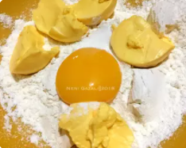

Resep Kue Pie Susu

Bahan Bahan
- Bahan Kulit
- 10 sdm Tepung Terigu
- 5 sdm Margarin
- 1 btr Kuning Telur
- Bahan Fla
- 2 btr Telur
- 10 sdm Air
- 14 sdm Susu Kental Manis
- 2 sdm Tepung Terigu
- 1/2 sdt Garam
Langkah Langkah
- Campur semua bahan kulit aduk dgn tangan hingga rata dan kalis

- Ratakan adonan pd teflon usahakan tebalnya rata lalu tusuk2 dgn garpu, sisihkan
- Campur semua bahan fla jd satu dan aduk hingga rata
- Panggang kulit pie sebentar saja kira kira 2 menit lalu tuang fla nya
- Masak dgn api kecil dan ditutup
- Apabila pinggiran kulitnya sdh berwarna kuning keemasan angkat pienya lalu dinginkan. Flanya akan mengeras sendiri setelah diangin anginkan
- Fla susu ala teflon siap disajikan